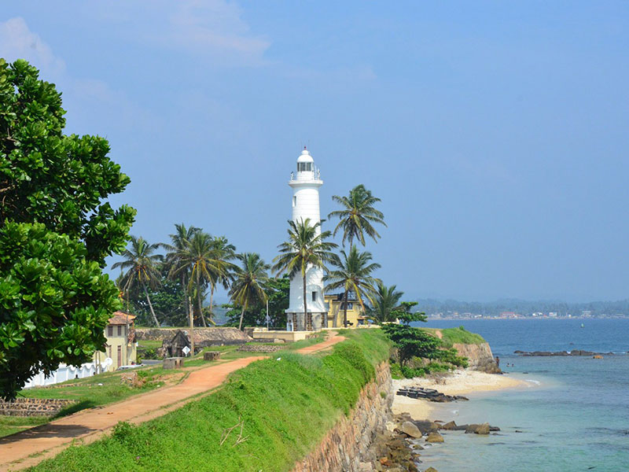

Galle Fort
As you drive into Galle Fort, the bricked walls of the fort welcome you to discover the treasures that lie within. Enter through the old gates and stand in awe as you admire the beautiful structures of the Galle lighthouse and clock tower located on the ramparts. Within the fort’s historic walls, discover the treasured attractions of this UNESCO World Heritage Site, from the Groote Kerk to the National Maritime Museum. Admire the colonial-styled buildings or expand your view to the horizon where sea meets sky in a seamless embrace.

galle dutch fort tour
Initially built by the Portuguese in the 16th century